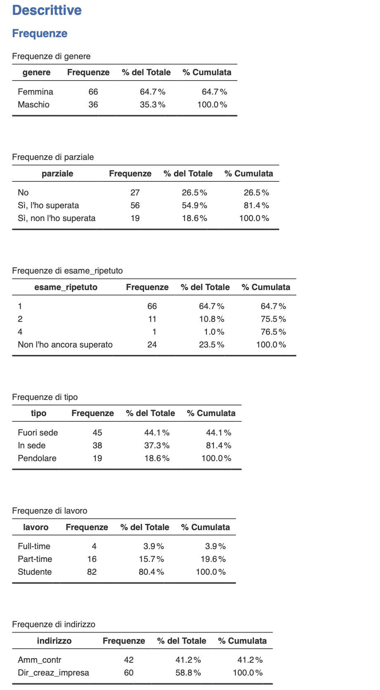
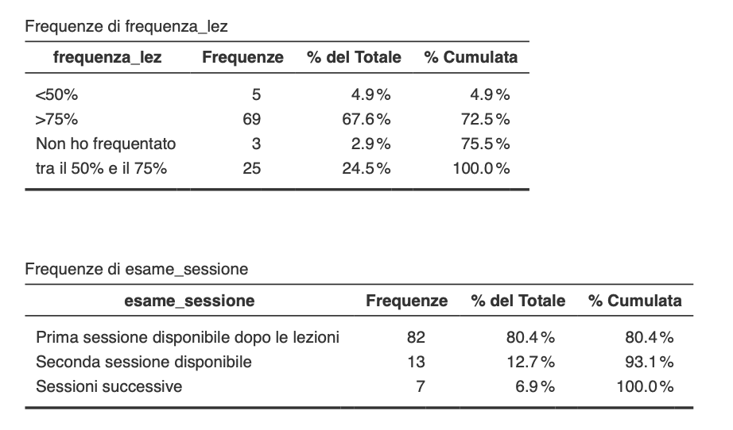
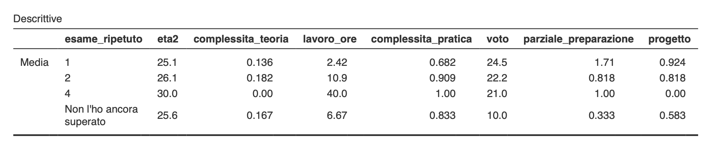
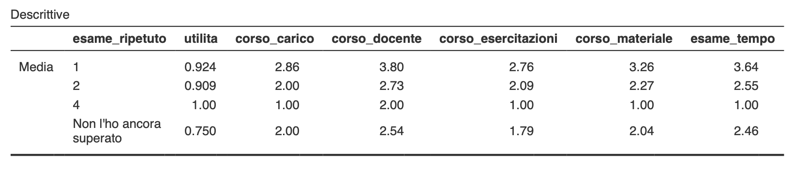
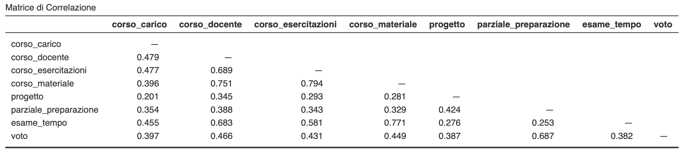
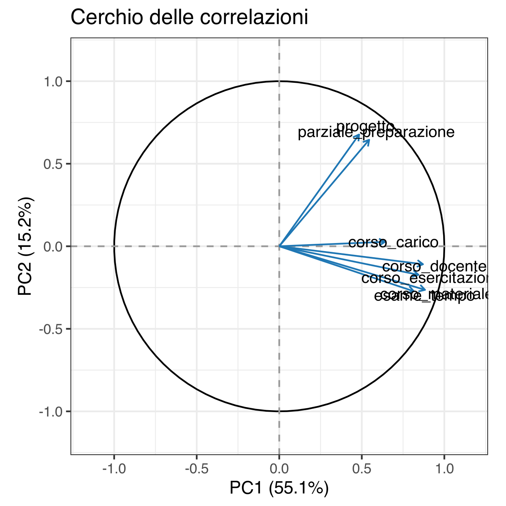
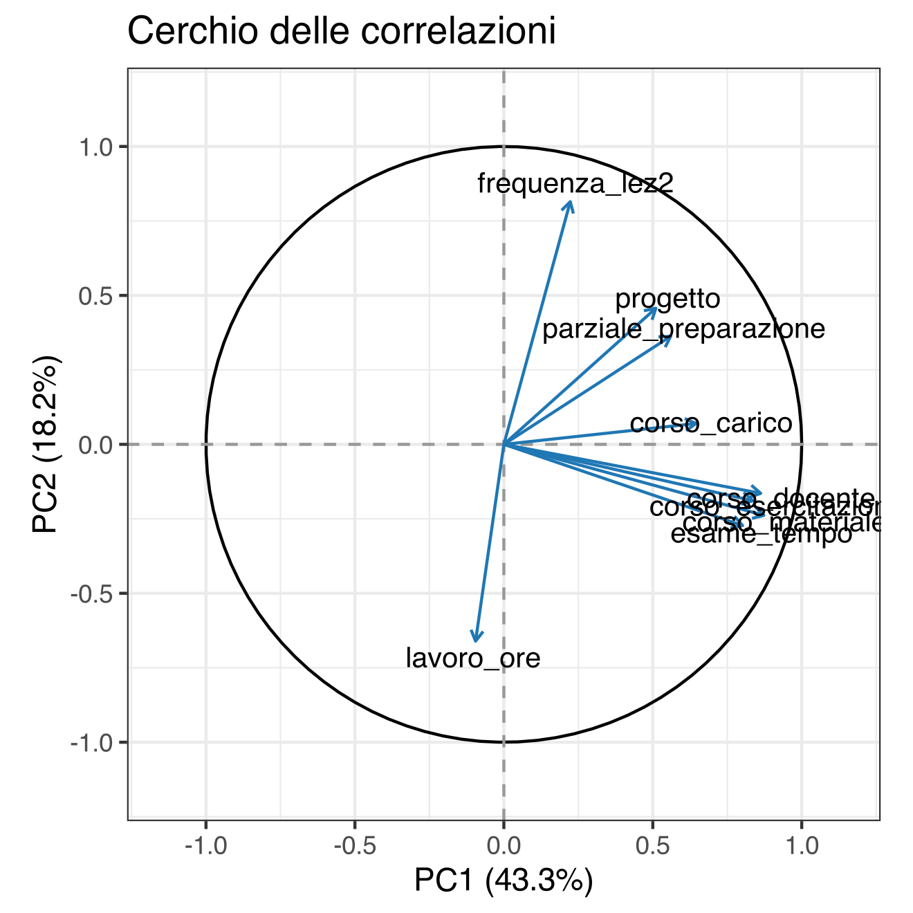
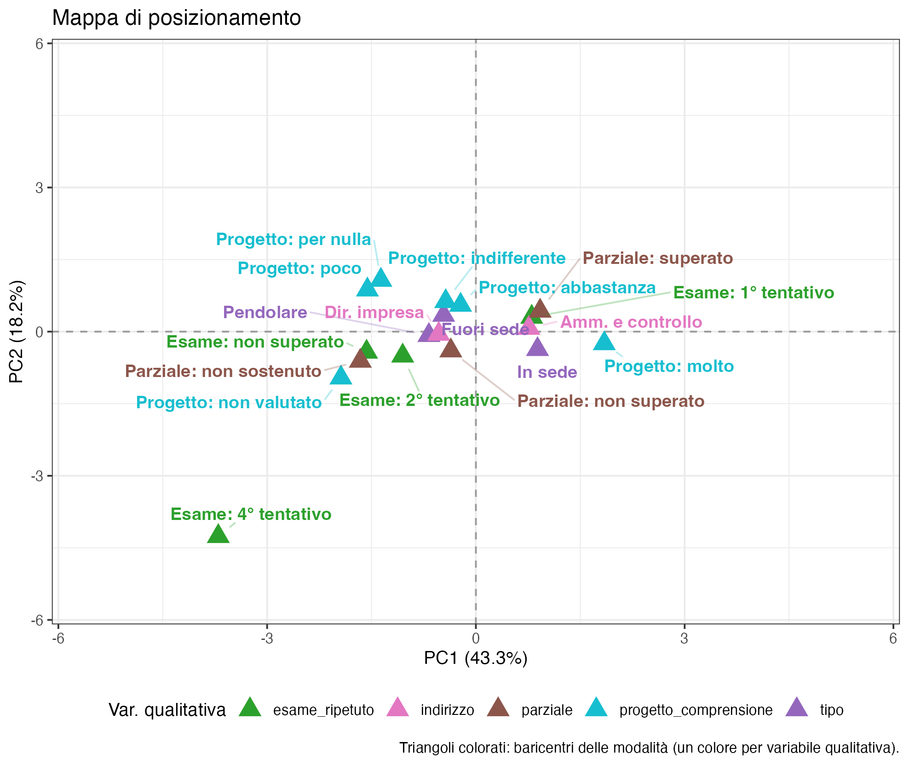
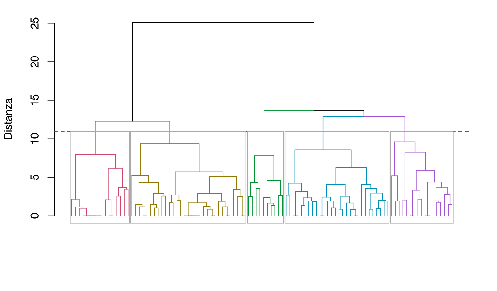
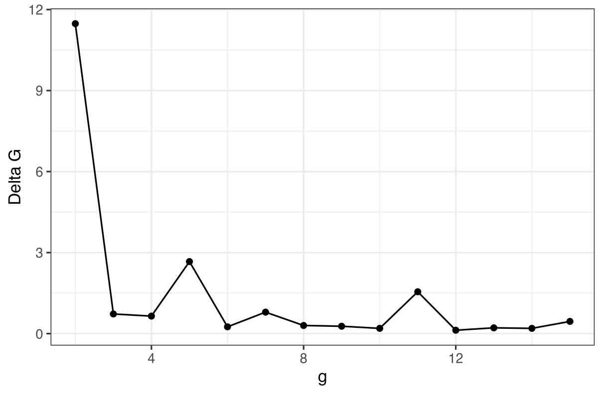

8 Esempio di realizzazione del progetto
Questo capitolo illustra i passaggi fondamentali per la costruzione di un report di analisi su un caso reale. I dati derivano da un’indagine condotta sulla popolazione studentesca di Economia Manageriale dell’Università di Cagliari, fra gli studenti che hanno frequentato il corso di Contabilità per la Direzione. I dati sono stati raccolti e analizzati da un gruppo di studenti del corso nell’ambito del progetto d’esame.
I dati sono riservati agli studenti del corso: non sono distribuiti con il modulo né pubblicati in questa versione online delle dispense. Nel § P-27 è indicato che cosa contengono il file Jamovi con le analisi di questo capitolo e la cartella Excel con dati grezzi, dati puliti e codifica. Sono 102 rispondenti.
Un accorgimento prima di rifare le analisi: le variabili qualitative che hanno un ordine naturale — il grado di accordo sulle domande relative al progetto, la fascia di frequenza alle lezioni, la sessione d’esame, la classe di età — nel file arrivano come nominali, e Jamovi le mette quindi in ordine alfabetico, che per loro non significa nulla (“abbastanza” prima di “per nulla”). Conviene dichiararle ordinali dal pannello delle variabili, mettendo i livelli nella sequenza giusta: non cambia il modo in cui le analisi le trattano, ma tabelle e grafici diventano leggibili (§ T-03).
Conviene tenere il dataset aperto mentre si legge: ogni analisi descritta qui si può rieseguire sugli stessi dati e confrontare con quanto riportato. Le variabili progetto_voto, progetto_comprensione, progetto_team e progetto_inutile usano tutte la stessa scala di accordo (per nulla, poco, indifferente, abbastanza, molto).
In un contesto professionale reale, il primo passo imprescindibile è la definizione a priori dell’obiettivo dell’analisi. In questo ambito didattico è concessa maggiore flessibilità: lo scopo primario è la dimostrazione delle competenze acquisite, quindi è consentito definire o affinare l’obiettivo a posteriori, basandosi sulle evidenze più significative emerse durante l’esplorazione dei dati.
Nella realtà non funziona così. Anche lì l’esplorazione può suggerire domande nuove, ma vanno presentate come tali, non come ipotesi fissate prima di guardare i dati. La ragione è precisa: esplorando molte variabili, qualche associazione salta fuori anche per caso, e un obiettivo costruito su quell’associazione la ritrova per forza nei dati da cui è nata. Un risultato emerso dall’esplorazione si può quindi riportare come risultato esplorativo, ma non come conferma di un’ipotesi: per verificarlo servono dati nuovi.
Per iniziare fissiamo un obiettivo preliminare, suscettibile di modifica:
Studiare gli elementi associati al ritardo nel superamento o sostenimento dell’esame (variabile
esame_ripetuto).
8.1 Analisi esplorativa
L’indagine prende avvio con un’analisi esplorativa univariata, finalizzata a delineare una caratterizzazione del campione. In questa fase preliminare l’attenzione si è focalizzata su otto variabili rappresentative del profilo dei rispondenti e degli obiettivi di ricerca: genere, parziale, esame_ripetuto, tipo, lavoro, frequenza_lez, esame_sessione, indirizzo.


L’analisi si basa su un campione di 102 studenti, con composizione demografica a netta prevalenza femminile (64,7%). L’80,4% del campione dichiara di essere studente a tempo pieno e di non lavorare, definendo un profilo di studente prevalentemente “dedicato”, concentrato in via esclusiva sul percorso universitario.
Sul piano della mobilità geografica, la categoria più rappresentata è quella degli studenti fuori sede (44,1%), superiore sia agli in sede (37,3%) sia ai pendolari (18,6%): nel campione c’è quindi una presenza rilevante di studenti che studiano lontano dalla residenza abituale.
A livello didattico, gli iscritti si ripartiscono tra due indirizzi: leggera maggioranza di Dir_creaz_impresa (58,8%) rispetto ad Amm_contr (41,2%). L’impegno accademico si riflette in tassi di frequenza molto elevati: il 67,6% dichiara presenza superiore al 75%, un ulteriore 24,5% nella fascia 50–75%.
Questo si traduce in tempestività nelle prove: l’80,4% tenta l’esame nella prima sessione disponibile al termine del corso. I risultati premiano la costanza: oltre la metà (54,9%) ha superato la prova parziale e il 64,7% ha concluso l’esame al primo tentativo. Resta però una quota rilevante (23,5%) che, al momento della rilevazione, non aveva ancora superato l’esame.
8.2 Analisi bivariata
In considerazione della chiarezza dei risultati emersi dall’univariata, si è scelto di non appesantire la trattazione con ulteriori tabelle: i valori percentuali sono riportati nel corpo del testo, privilegiando la sintesi espositiva.
La fase successiva approfondisce la variabile obiettivo esame_ripetuto, indagando l’esistenza di relazioni di dipendenza o associazione significativa con altre variabili. Sono state esaminate in particolare le relazioni con: eta2, complessita_teoria, esame_tempo, corso_docente, utilita, lavoro_ore, complessita_pratica, voto, parziale_preparazione, progetto, corso_materiale, corso_esercitazioni, corso_carico; non tutte risultano rilevanti, come mostrano le letture principali.


8.2.1 Letture principali
- Il voto medio è più alto fra chi supera l’esame nei primi tentativi e cala nei gruppi che richiedono più appelli. È un’associazione fra esito e numero di tentativi: non basta a stabilire che la differenza dipenda solo dal livello di preparazione.
- Le ore di lavoro non hanno un andamento regolare: le medie sono circa 2,42 ore al primo tentativo, 10,9 al secondo e 40 nell’unico caso di quarto tentativo, mentre chi non ha ancora superato l’esame si attesta intorno a 6,67. La numerosità molto piccola di alcuni gruppi impone cautela; resta l’indicazione di approfondire il rapporto fra impegno lavorativo e percorso d’esame.
- Una maggiore
parziale_preparazionesi associa a un minor numero di tentativi: partecipazione e preparazione alla prova intermedia sembrano indicatori di un percorso più regolare, senza che questo dimostri un effetto causale del parziale. - La partecipazione al progetto è più frequente fra chi supera l’esame nei primi appelli. Anche qui si tratta di un’associazione, che può riflettere caratteristiche preesistenti degli studenti più coinvolti.
- La percezione dell’adeguatezza del tempo d’esame (
esame_tempo) varia col numero di tentativi: la relazione descrive un legame fra esperienza d’esame e percezione del tempo, non permette di concludere che la durata della prova sia la causa delle differenze negli esiti. - Nessuna differenza marcata sulla percezione della complessità teorica (
complessita_teoria) fra gruppi. - Chi supera l’esame nei primi tentativi tende a valutare la complessità pratica (
complessita_pratica) in modo meno critico. - La soddisfazione media per i quattro aspetti del corso (
corso_docente,corso_materiale,corso_esercitazioni,corso_carico) è mediamente più alta nei gruppi che superano prima. L’associazione può riflettere sia differenze nell’esperienza didattica sia caratteristiche degli studenti, e non va letta in senso causale.
8.2.2 Uso di un assistente AI per la sintesi
Successivamente, le considerazioni sono state riscritte in forma discorsiva con l’aiuto di Microsoft Copilot, un assistente di intelligenza artificiale (AI, artificial intelligence). Il prompt gli fornisce i risultati delle analisi e le bozze dei commenti scritte dagli studenti, e gli chiede di riscriverle senza aggiungere nulla di suo: l’interpretazione resta degli studenti.
“Devo scrivere il commento dell’analisi esplorativa per un report su un corso universitario. L’obiettivo è capire quali caratteristiche degli studenti sono associate al numero di sessioni necessarie per superare l’esame. Ti allego i risultati delle analisi (analisi bivariata.pdf) e le bozze dei commenti che ho scritto io (Analisi esplorativa.docx). Trasforma le mie bozze in un testo discorsivo, senza elenchi puntati, inserendo qualche valore preso dai risultati. Non aggiungere interpretazioni, cause o conclusioni che non siano già nelle mie bozze: se ti sembra che manchi qualcosa, segnalamelo a parte invece di scriverlo nel testo.”
Nel complesso il campione conta 102 studenti: 66 hanno superato l’esame al primo appello, 11 al secondo, 1 al quarto e 24 non l’hanno ancora superato. L’andamento del voto conferma una relazione inversa con il numero di ripetizioni: la media è 24,5 al primo appello, 22,2 al secondo, 21,0 al quarto (caso isolato), 10,0 fra chi non ha ancora superato. Coerente con l’interpretazione: chi supera subito ha preparazione più solida; ripetere non si traduce necessariamente in voto più alto.
Le ore di lavoro medie crescono col numero di ripetizioni: 2,42 ore al primo appello, 10,9 al secondo, 40,0 nel caso del quarto, 6,67 fra chi non ha ancora superato. Chi lavora di più ha meno tempo da dedicare allo studio.
La preparazione al parziale emerge come fattore distintivo: media di parziale_preparazione 1,71 al primo appello, 0,818 al secondo, 0,333 fra i non ancora promossi. Anche il progetto si associa a un percorso più lineare: media 0,924 al primo appello, 0,818 al secondo, 0,583 fra i non ancora promossi.
Sul versante delle percezioni, chi supera al primo appello giudica più “adeguato” il tempo a disposizione: media di esame_tempo 3,64 al primo, 2,55 al secondo, 2,46 fra i non ancora promossi. La parte pratica (complessita_pratica) è reputata meno difficile da chi supera subito.
Anche gli indicatori di soddisfazione sono più alti tra chi supera al primo appello: la valutazione del docente (corso_docente) media 3,80 al primo appello, 2,73 al secondo, 2,54 fra i non ancora promossi.
L’età varia poco fra i gruppi (25,1 / 26,1 / 25,6); difficile trarre conclusioni solide.
In sintesi, tre elementi accompagnano con maggiore probabilità il superamento rapido: buona performance al parziale, svolgimento del progetto, minore carico di lavoro extra-universitario. A questi si affiancano percezioni più favorevoli sul tempo d’esame e sulla difficoltà pratica, e una soddisfazione più alta per corso e docente. Va ricordato che si tratta di evidenze esplorative e che alcune categorie hanno numerosità molto diverse: queste relazioni descrivono associazioni e non implicano nessi causali.
Il passaggio “Chi lavora di più ha meno tempo da dedicare allo studio” mostra bene perché il testo generato dall’AI va vagliato anche quando il prompt è scritto bene: dai dati si osserva un’associazione fra ore lavorate e percorso d’esame, ma non si può concludere che il lavoro sia la causa del maggior numero di tentativi.
Anche il valore 10,0 fra chi non ha ancora superato l’esame non è un voto medio: nel foglio “Dati puliti” 10 è il codice assegnato a chi non ha un voto (nel foglio “Dati originali” questi studenti avevano risposto 0 o lasciato una nota testuale). Il confronto dei voti medi ha senso solo fra chi ha superato l’esame (24,5 / 22,2 / 21,0); per lo stesso motivo voto non entra né nell’Analisi delle Componenti Principali (PCA, Principal Component Analysis) né nella cluster analysis (vedi più avanti).
L’output dell’assistente è una solida base preliminare, ma prima dell’inserimento definitivo nel report va sottoposto a vaglio critico per:
- eliminare informazioni marginali;
- preservare gli elementi di maggiore rilevanza informativa;
- correggere eventuali errori o interpretazioni forzate.
8.3 Analisi delle Componenti Principali (PCA)
L’applicazione della PCA persegue, in prima istanza, l’obiettivo di analisi di posizionamento. Condizione necessaria è l’identificazione di un sottoinsieme di variabili correlate fra loro e coerenti con gli obiettivi di ricerca.
Qualora l’analisi delle correlazioni non evidenzi una struttura adeguata a supportare un’interpretazione di posizionamento, due scenari alternativi:
- Ridefinizione dell’obiettivo — nuovo focus emerso naturalmente dalla struttura dei dati, con aggiornamento della dichiarazione degli obiettivi.
- PCA come pre-processing — uso esclusivo per la riduzione di dimensionalità, propedeutica alla cluster analysis. Le componenti diventano input ortogonali per la successiva segmentazione.
8.3.1 Selezione delle variabili
Coerentemente con il focus sulla ripetizione della prova, ci si è concentrati sulle correlazioni fra variabili inerenti alla didattica e alla valutazione. Dopo una selezione iterativa, sono state isolate sette variabili:
corso_carico,corso_docente,corso_esercitazioni,corso_materiale(soddisfazione didattica);progetto,parziale_preparazione,esame_tempo(elementi d’esame).

voto
voto resta fuori dalla PCA
Nel progetto consegnato voto era fra le variabili attive. Per i 24 studenti che non hanno ancora superato l’esame, però, vale 10: è il codice assegnato a chi non ha un voto, non un voto. Così la variabile mescola due informazioni diverse, il voto per i 78 promossi e l’esito per gli altri, con un valore arbitrario: con 0 o 17 al posto di 10 cambierebbero correlazioni, assi e gruppi. Il codice gonfia anche le correlazioni con la partecipazione: sui 102 studenti voto correla 0,69 con parziale_preparazione e 0,39 con progetto, sui soli promossi 0,45 e 0,25. Soprattutto, l’esito dell’esame è ciò che il progetto vuole spiegare: metterlo fra le variabili che costruiscono assi e gruppi renderebbe circolare la lettura.
Per lo stesso motivo voto non viene proiettato nemmeno come variabile supplementare: anche lì la sua correlazione con gli assi dipenderebbe dal codice (nella configurazione finale varrebbe 0,60 con la prima componente principale (PC1) usando 10, 0,54 con 0, 0,69 con 17). L’esito dell’esame entra nella mappa con esame_ripetuto, che è qualitativa e non ha bisogno di codici. Il legame fra voto e assi si misura invece sui soli 78 promossi, senza toccare la PCA, che resta costruita sui 102 studenti: si salvano i punteggi di PC1 (opzione ▸ SALVA · PC1), si crea una copia di voto in cui il 10 è dichiarato valore mancante e se ne calcola la correlazione con PC1 nella Correlation Matrix. Un filtro sulle righe non va bene, perché in jamovi vale per tutte le analisi: la PCA verrebbe ricalcolata sui soli promossi. E dichiarare il 10 mancante nella stessa voto per proiettarla come supplementare non risolverebbe: FactoMineR, che il modulo usa, sostituirebbe i mancanti con la media dei promossi (24,2), un altro valore arbitrario.
La matrice evidenzia una struttura di correlazione sufficientemente marcata da giustificare l’applicazione della PCA.
La costruzione dello spazio fattoriale è intrinsecamente iterativa: si bilancia la parsimonia del modello (numero di variabili) con la capacità esplicativa. In questo esempio didattico si è adottato, come criterio operativo e non come regola generale della PCA, l’obiettivo di tenere un insieme di variabili abbastanza parsimonioso (7, poi portate a 9 nell’analisi di sensibilità descritta più avanti) e di arrivare a un piano bidimensionale che rappresentasse una quota sostanziale della variabilità (attorno al 60%). Né il 60% né il numero di variabili sono soglie universali di interpretabilità: la scelta va guidata prima di tutto dall’obiettivo sostantivo, dalla struttura delle correlazioni e dalla leggibilità delle componenti.
8.3.2 Prima iterazione della PCA

L’analisi degli autovalori evidenzia che le prime due componenti spiegano 55,07% e 15,16% della varianza totale, per un cumulato del 70%.
Dall’ispezione grafica emergono due cluster di variabili e una variabile isolata:
- Gruppo 1:
corso_docente,corso_esercitazioni,corso_materiale,esame_tempo; - Gruppo 2:
progetto,parziale_preparazione; - Variabile cardine:
corso_carico, in posizione intermedia tra i due gruppi.
8.3.2.1 Interpretazione di PC1
La prima componente è caratterizzata dal contributo concordante di tutte le variabili. La variabile corso_carico mostra un allineamento pressoché perfetto con l’asse, sebbene con magnitudine contenuta. Gli altri due gruppi, pur presentando un angolo maggiore fra loro, mostrano elevate saturazioni sulla componente.
PC1 sintetizza il Coinvolgimento nel Corso. Aggrega positivamente:
- la valutazione della qualità didattica (fattori su cui il docente ha controllo: disponibilità del docente e dei tutor per chiarimenti, materiali, esercitazioni, tempo d’esame);
- la partecipazione attiva dello studente (adesione al progetto, prove intermedie).
La soddisfazione per corso_carico riflette l’apprezzamento per la progettazione dei contenuti. Fra i 78 promossi il punteggio su PC1 correla 0,68 con il voto: il coinvolgimento si accompagna a esiti migliori, ma l’esito non ha contribuito a costruire l’asse.
8.3.2.2 PC2 ambigua → arricchimento del modello
Nella configurazione iniziale, l’interpretazione della seconda componente principale (PC2) risulta problematica. L’autovalore di PC2 è appena sopra 1 (1,06) e le saturazioni sull’asse verticale riguardano quasi solo progetto e parziale_preparazione (circa 0,68 e 0,65): l’asse si limita a contrapporre i due gruppi di variabili, entrambi già legati a PC1, con corso_carico ortogonale: è un contrasto difficile da tradurre in una dimensione sostantiva utile per l’obiettivo del progetto.
Poiché PC2 risultava difficilmente interpretabile, si è svolta un’analisi esplorativa di sensibilità, aggiungendo due variabili — lavoro_ore e frequenza_lez2 — coerenti con l’obiettivo del progetto. È una scelta dichiaratamente data-driven ed esplorativa, non una procedura standard per “costruire” una seconda componente interpretabile: in un’analisi confermativa la selezione delle variabili andrebbe decisa prima di guardare i risultati.
8.3.3 Configurazione finale della PCA

L’inserimento delle nuove variabili comporta una riduzione della varianza spiegata cumulata, che si assesta al 61,5% (43,3% + 18,2%). Il decremento è atteso perché le due nuove variabili sono poco correlate con quelle già presenti e portano una variabilità propria, che il primo piano non riesce ad assorbire del tutto; il valore rimane pienamente accettabile per le finalità esplorative.
Il vantaggio sostanziale è nella chiara leggibilità della seconda dimensione:
- la struttura interpretativa della PC1 resta simile dopo l’aggiunta delle due variabili, il che suggerisce una certa stabilità descrittiva dell’asse rispetto a questa specifica modifica della base;
- la PC2 emerge come dimensione del Tempo a disposizione per lo studio.
I vettori confermano: PC2 è correlata positivamente con la frequenza alle lezioni (0,81) e negativamente con le ore di lavoro settimanali (−0,66). Si delinea una dicotomia comportamentale:
- sul lato dell’asse associato a maggiore frequenza alle lezioni si collocano anche maggiore partecipazione ad alcune attività e risultati mediamente più favorevoli;
- sul lato opposto si collocano le maggiori ore di lavoro.
L’asse si può quindi leggere, con cautela, come una dimensione legata alla disponibilità e all’organizzazione del tempo per lo studio. La PCA descrive una struttura di associazioni: non dimostra relazioni causali fra lavoro, frequenza, strumenti didattici ed esiti.
8.3.4 Mappa di posizionamento
Definite le coordinate semantiche dello spazio fattoriale:
- Dimensione 1 (ascissa) = Coinvolgimento nel corso;
- Dimensione 2 (ordinata) = Tempo a disposizione per lo studio;
si procede all’analisi del posizionamento. Data l’elevata numerosità, la proiezione delle singole osservazioni genererebbe un sovraffollamento grafico. L’analisi si focalizza pertanto sulla proiezione delle modalità delle variabili categoriche di interesse (variabili illustrative): esame_ripetuto, tipo, progetto_comprensione, indirizzo, parziale.

progetto_comprensione, di chi non ha valutato il progetto, sono raccolte nella modalità «non valutato», che jamovi altrimenti non mostra
L’analisi di posizionamento evidenzia una struttura interpretativa chiara e coerente lungo i primi due assi (61,5% di varianza). L’asse orizzontale (Coinvolgimento) è la principale dimensione discriminante; l’asse verticale (Tempo) introduce una differenziazione legata ai vincoli organizzativi.
Le modalità di esame_ripetuto si dispongono lungo il primo asse: il superamento al primo tentativo nella parte positiva (0,80), il secondo tentativo (−1,05) e il mancato superamento (−1,57) in quella negativa; il caso isolato del quarto tentativo cade all’estremo del piano e non va interpretato. L’ordinamento è un risultato, non un effetto di costruzione: l’esito non è fra le variabili attive.
L’inserimento delle modalità di progetto_comprensione rafforza la lettura: “molto” si colloca nettamente nella parte positiva di PC1 (alto coinvolgimento, superamento rapido), “abbastanza” vicino all’origine; “indifferente”, “poco” e “per nulla” nelle aree negative (basso engagement, traiettorie discontinue). La percezione di efficacia del progetto si integra con le dinamiche motivazionali e con gli esiti valutativi.
Per parziale: “Sì, l’ho superata” si colloca nelle aree di elevato coinvolgimento (indicatore di allineamento precoce col percorso didattico). “Sì, non l’ho superata” in posizione intermedia. “No” tende a disporsi nelle zone di minore coinvolgimento: nel campione la mancata partecipazione si colloca in una regione associata a minore coinvolgimento e a percorsi d’esame più discontinui. È quindi una caratteristica da monitorare, ma questa analisi descrittiva non ne dimostra una capacità predittiva prospettica.
Per i due indirizzi: Amm_contr si colloca dal lato del maggiore coinvolgimento (PC1 positiva), Dir_creaz_impresa dal lato opposto, verso un coinvolgimento più contenuto; su PC2 entrambi restano vicini all’origine. Pur senza polarizzazione netta, suggerisce eterogeneità nelle modalità di apprendimento.
Per lo status abitativo: le modalità occupano posizioni differenti sul piano. Gli studenti in sede stanno dal lato del maggiore coinvolgimento e, su PC2, verso valori negativi; i pendolari si collocano soprattutto dal lato del minore coinvolgimento (PC1 negativa) e restano vicini all’origine sull’asse del tempo; i fuori sede si spostano verso valori positivi di PC2. La mappa descrive associazioni e non permette, da sola, di attribuire quelle posizioni a specifici vincoli logistici.
Ipotesi di intervento suggerite dai risultati. Le analisi individuano gruppi e associazioni che possono orientare possibili interventi, ma non permettono di stimarne l’effetto causale: quelle che seguono sono azioni da sperimentare e valutare successivamente, non misure di cui sia stata dimostrata l’efficacia.
- valutare una maggiore strutturazione del progetto come strumento di apprendimento guidato, con feedback intermedi, soprattutto per i profili che mostrano minore coinvolgimento;
- valutare attività di accompagnamento e di recupero collegate al parziale, per chi non lo supera;
- considerare soluzioni organizzative per chi ha maggiori vincoli di presenza: materiali asincroni strutturati, tutorato flessibile, momenti di studio assistito compatibili con gli spostamenti.
8.4 Cluster Analysis
Nel progetto originale gli studenti avevano usato la distanza di Mahalanobis, con una base della segmentazione che conteneva anche voto. L’analisi che segue è rifatta senza voto ed è quella del report del § P-27.
Per identificare profili studenteschi omogenei e definire strategie mirate alla riduzione della reiterazione d’esame, si è proceduto a una Cluster Analysis gerarchica. La base di segmentazione è formata da 11 variabili attive: le nove della PCA più le due che indicano quale parte dell’esame lo studente ritiene più complicata.
parziale_preparazione, complessita_teoria, complessita_pratica, corso_materiale, corso_esercitazioni, corso_docente, corso_carico, progetto, lavoro_ore, esame_tempo, frequenza_lez2.
8.4.1 Scelta della metrica e del metodo
Le variabili sono misurate su scale diverse (giudizi da 1 a 5, ore di lavoro, indicatori 0/1): si standardizzano e si usa la distanza euclidea, con il metodo di Ward, che cerca gruppi compatti.
La distanza di Mahalanobis, che tiene conto delle correlazioni, qui non è la scelta migliore: standardizza gli scostamenti lungo tutte le direzioni principali dei dati, quindi dà molto peso anche a quelle di varianza piccola, che spesso sono soprattutto rumore. La si usa solo come confronto, insieme al legame completo e al legame medio.
8.4.2 Quanti gruppi

| g | R² | RMSSTD | Indice CH | Delta G |
|---|---|---|---|---|
| 2 | 0,284 | 0,850 | 39,682 | 11,478 |
| 3 | 0,368 | 0,803 | 28,811 | 0,728 |
| 4 | 0,443 | 0,758 | 25,983 | 0,649 |
| 5 | 0,511 | 0,714 | 25,318 | 2,668 |
| 6 | 0,552 | 0,686 | 23,683 | 0,252 |
| 7 | 0,592 | 0,659 | 22,938 | 0,795 |

Il Delta G ha due picchi. Il primo, a 2 gruppi (11,48), separa soltanto gli studenti soddisfatti del corso dagli altri. Il secondo è a 5 (2,67): passare da 5 a 4 gruppi richiederebbe una fusione molto più alta di quelle precedenti. L’indice di Caliński-Harabasz (CH) è massimo a 2 e poi decresce senza altri massimi, quindi non aiuta a scegliere fra le soluzioni con più gruppi. Si sceglie la soluzione a 5 gruppi, che spiega il 51% della variabilità (R² = 0,51) e distingue profili utili per l’obiettivo del progetto.
8.4.3 Confronto con altri metodi (ARI)
Con le stesse 11 variabili e 5 gruppi, la partizione di Ward si confronta con quelle del legame completo e del legame medio (distanza euclidea su variabili standardizzate) e di Ward con la distanza di Mahalanobis; l’accordo fra due partizioni è misurato dall’indice di Rand corretto (ARI, Adjusted Rand Index):
| Ward (euclidea) | Legame completo | Legame medio | Ward (Mahalanobis) | |
|---|---|---|---|---|
| Ward (euclidea) | 1,000 | |||
| Legame completo | 0,535 | 1,000 | ||
| Legame medio | 0,145 | 0,125 | 1,000 | |
| Ward (Mahalanobis) | 0,292 | 0,156 | 0,170 | 1,000 |
Il legame completo dà una partizione abbastanza simile a quella di Ward (ARI 0,54). Il legame medio isola pochi studenti in gruppi minuscoli e ne mette 84 in uno solo; la Mahalanobis con Ward porta a gruppi diversi (ARI 0,29). La struttura dei dati, quindi, non è nettissima: i cinque profili vanno letti come una descrizione utile del campione, non come una tipologia stabile. Un ARI elevato fra soluzioni alternative, del resto, mostrerebbe solo accordo fra quelle partizioni, non stabilità su un nuovo campione.
8.4.4 Caratterizzazione dei gruppi
Si è proceduto all’interpretazione con l’analisi di Caratterizzazione, fissando un livello di significatività \(\alpha = 0{,}05\) e usando come descrittori le altre variabili del questionario. voto resta fuori anche qui come variabile quantitativa, perché la sua media in un gruppo mescolerebbe di nuovo voti e codice 10: l’esito si legge con esame_ripetuto, e il voto si confronta solo fra i promossi.
| Cluster | n | 1° tentativo | 2° tentativo | 4° tentativo | Non ancora superato | Voto medio dei promossi |
|---|---|---|---|---|---|---|
| 1 | 17 | 4 | 2 | 1 | 10 | 22,4 |
| 2 | 31 | 25 | 3 | 0 | 3 | 24,9 |
| 3 | 10 | 6 | 1 | 0 | 3 | 24,9 |
| 4 | 28 | 16 | 5 | 0 | 7 | 22,1 |
| 5 | 16 | 15 | 0 | 0 | 1 | 26,2 |
8.4.5 I cinque cluster
Prima di leggere i profili, un dettaglio pratico: il modulo numera i gruppi nell’ordine in cui compaiono le righe del dataset. I numeri usati qui sono quelli che si ottengono aprendo il file valutazione_corso.omv; importando invece il foglio Excel, che ha le stesse righe in un altro ordine, si ottengono gli stessi cinque gruppi con numeri diversi. Per confrontare due soluzioni contano le composizioni dei gruppi, non i loro numeri (è anche il motivo per cui l’ARI non dipende dalle etichette).
Quasi nessuno ha svolto il progetto (2 su 17) e il 59% non ha sostenuto il parziale, contro il 26% del campione. Qui stanno i 3 studenti che non hanno frequentato e 3 dei 4 lavoratori a tempo pieno: la frequenza è la più bassa (7 su 17 oltre il 75%) e le ore di lavoro le più alte (9,4 contro 4,7 di media). Le valutazioni del corso sono basse. Prevale l’indirizzo Direzione e creazione d’impresa (14 su 17). È il gruppo con più non promossi: 10 su 17, cioè 10 dei 24 del campione.
Le valutazioni più alte di disponibilità del docente (4,68) e tempo d’esame (4,48), alte anche quelle di materiale ed esercitazioni. Tutti hanno svolto il progetto e il 74% lo ritiene molto utile per la comprensione. Più frequenti della media gli studenti in sede (61% contro 37%) e i lavoratori part-time (9 su 31); la frequenza è un po’ più bassa (14 su 31 fra il 50% e il 75% delle lezioni). Qui stanno 12 dei 13 studenti che hanno sostenuto l’esame alla seconda sessione disponibile. Esiti buoni: 25 su 31 al primo tentativo, 3 non promossi.
Tutti indicano la parte teorica come la più difficile (sono 10 dei 15 del campione che lo fanno) e danno i giudizi più bassi su materiale (1,60) ed esercitazioni (1,30). Gli esiti sono intermedi: 6 al primo tentativo, 3 non promossi. È un gruppo piccolo, definito soprattutto da una variabile binaria: va letto con cautela.
Frequentano con regolarità (25 su 28 oltre il 75% delle lezioni) e quasi tutti non lavorano (0,7 ore in media). Tutti hanno svolto il progetto, ma lo giudicano poco utile: per la comprensione «poco» o «per nulla» in 12 casi, «molto» in uno solo. Danno valutazioni molto basse, fra le più basse del campione, a esercitazioni (1,32), materiale (1,64), disponibilità del docente (2,21) e tempo d’esame (2,18), e quasi tutti indicano la parte pratica come la più difficile. Pochi gli studenti in sede (4), molti i fuori sede (16). Gli esiti sono nella media: 16 al primo tentativo, 7 non ancora promossi.
Tutti frequentano oltre il 75% delle lezioni, 14 su 16 hanno superato il parziale e 15 superano l’esame al primo tentativo, con il voto medio più alto fra i promossi (26,2). Le valutazioni più alte di materiale (4,25), esercitazioni (3,94) e carico didattico (3,69); il progetto è molto utile per il 69%. Nessuno indica la parte pratica come la più difficile. Prevale l’indirizzo Amministrazione e controllo (12 su 16).
I 24 studenti che non hanno ancora superato l’esame non formano un gruppo solo: 10 sono nel cluster 1, senza progetto e spesso senza parziale, con più ore di lavoro; 7 nel cluster 4, che frequenta ma è molto critico sul corso; gli altri 7 sono distribuiti fra i gruppi 2, 3 e 5. Ci sono almeno due strade verso la ripetizione dell’esame, e chiedono interventi diversi.
8.5 Strategie operative mirate per cluster
A partire dai profili emersi, si propongono strategie operative differenziate per i gruppi problematici, formulate in modo coerente con un contesto di miglioramento didattico e di assicurazione della qualità. L’obiettivo è minimizzare la ripetizione dell’esame aumentando le probabilità di successo ai primi tentativi. Le analisi individuano profili e associazioni, non effetti causali: sono ipotesi da sperimentare e valutare.
Vincoli di tempo e presenza, e strumenti del corso non usati → intercettare presto chi rischia di non chiudere l’esame e rendere il percorso più flessibile senza abbassarne gli standard:
- usare il parziale come momento di monitoraggio, con attività di recupero per chi non lo sostiene o non lo supera;
- progetto modulare, con una distribuzione graduale dell’impegno, accessibile anche a chi frequenta meno;
- materiali asincroni ben organizzati (registrazioni, dispense strutturate) e pianificazione trasparente del carico per chi lavora.
Studenti presenti ma insoddisfatti degli strumenti → rivedere gli strumenti stessi:
- esercitazioni e materiale ricevono le valutazioni più basse proprio da chi frequenta: rafforzare la preparazione alla parte pratica, che quasi tutti indicano come la più difficile;
- chiarire il collegamento fra lezioni, esercitazioni e prova d’esame, e il contributo del progetto alla comprensione;
- verificare l’adeguatezza del tempo d’esame.
Supporto mirato sulla parte teorica: schemi riassuntivi, esempi guidati, esercizi di teoria, momenti di verifica dell’apprendimento prima della prova.
Progetto e parziale sono associati ai percorsi più regolari: vanno mantenuti e resi espliciti come strumenti di apprendimento guidato, non solo valutativi.
In sintesi, le strategie condividono una logica comune: spostare l’attenzione da interventi generalisti a azioni differenziate per profilo di studente, mantenendo invariati gli obiettivi formativi ma adattando strumenti, tempi e modalità di supporto. Questo approccio trasforma l’analisi descrittiva in una leva concreta per il miglioramento della qualità della didattica.
8.6 Cosa portare nel report finale
L’esempio sviluppato in questo capitolo è esaustivo dei passaggi da affrontare. Nel report consegnato (5 pagine, da usare tutte), per ciascuna fase è opportuno selezionare gli elementi più rappresentativi:
- Introduzione: contesto, popolazione, obiettivo, ipotesi.
- Analisi esplorativa: solo le 2–3 figure più informative; il resto in testo discorsivo.
- PCA: cerchio finale + mappa di posizionamento + 3–4 punti di lettura strategici.
- Cluster: dendrogramma scelto + tabelle di caratterizzazione + profili nominati + 3–4 strategie operative.
- Conclusioni: risposta alla domanda di ricerca + proposte operative concrete + limiti + sviluppi.
Per la convenzione di naming dei file da consegnare e la checklist finale, vedi Introduzione al progetto del corso.